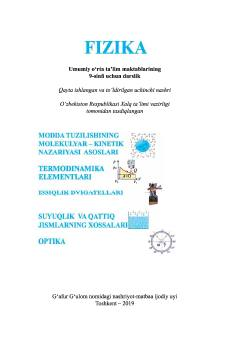

9F9-sinf o'quvchilari uchun molekulyar fizika va termodinamika asoslari bo'yicha darslik.
Ushbu darslik umumiy o'rta ta'lim maktablarining 9-sinf o'quvchilari uchun mo'ljallangan bo'lib, molekulyar-kinetik nazariya asoslari, termodinamika elementlari hamda suyuq va qattiq jismlarning xossalarini qamrab oladi. Kitobda fizika qonuniyatlari nazariy va amaliy masalalar yordamida tushuntirilgan.